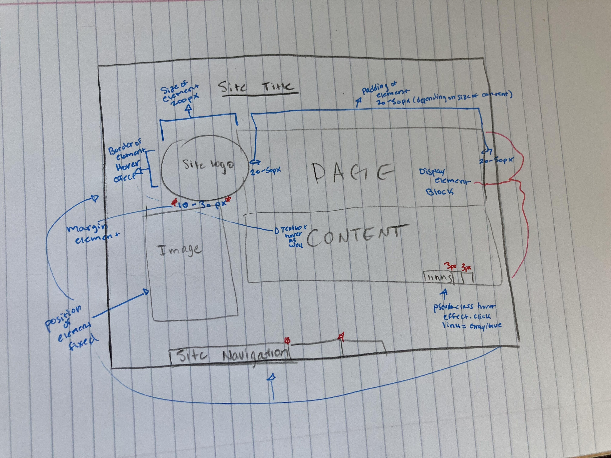

Index
Site Slogan
My design will be about sustainability. With this assignment, I hope to learn how to create functional websites so that I can do my part with environmental, sustainable programs.
In my design, I will include a site logo with a size element of 200px. Navigation at 300px. Font size at 200%. For the border I'm planning 5px border with a white background. As well as a line height of 150px. And for main content I will be doing a 300px margin. A display element of block for the page contect. A pseudo class hover effect for the links. And a fixed position for a majority of the elements on the page. I wanted to try to place it like my initial drawing that can be seen in the website#3 prototype, but after spending 4 hours and getting no where I decided to resort back to the basics. Hopefull this upcoming semester I'll be way more comfortable with web design than I am now.:)